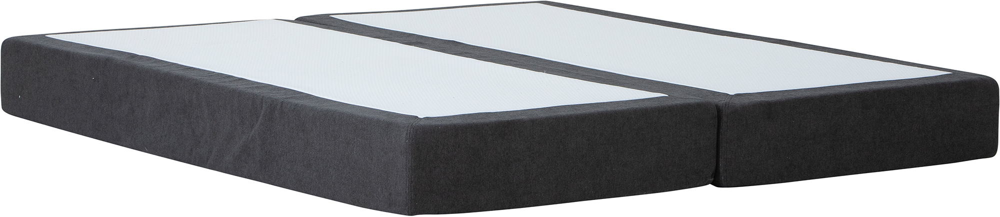
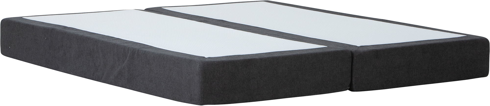

Moon Gold spring mattress 180x200, pocket 7-zone. Primo 96 Anthracite
197696
 

Description
Experience restful nights with the Moon Gold spring mattress, designed with a 7-zone pocket spring system to offer tailored support to every part of your body. Sized at 180x200 cm, this mattress features the durable and stylish Primo 96 anthracite fabric, blending seamlessly into modern bedroom interiors. Available in Gold, Silver, and Bronze tiers, this mattress balances quality and value, ensuring comfortable and supportive sleep. The mattress is part of the versatile NEST & LIVING collection, created to meet diverse comfort needs without compromising style and practicality.
Technical specifications
| Size | 180 cm × 200 cm |
|---|---|
| Fabric | Primo 96 Anthracite |
| Comfort System | 7-zone pocket spring for individualized body support |
| Color Options | Classic beige or modern anthracite |
| Available Tiers | Gold, Silver, Bronze |
| Care Instructions | Maintain cleanliness by regular vacuuming and wiping with a damp cloth; designed for durability and easy upkeep |